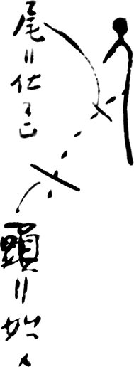

1.《小说史略》原著46页8行（译本60页3行）
又云，“唐张柬之书《洞冥记》后云：《汉武故事》，王俭造也。”
问：此句译作“唐朝张柬之在《洞冥记》后面写道……”？
答：然。
问：或译作“唐朝张柬之的书，在《洞冥记》之后云……”？
答：否。
问：“书”作名词吗？
答：否。
问：“书”作动词吗？
答：然。
2.《小说史略》原著53页3行（译本70页14行）
问：《外戚传》注云《史记》。可一位友人[31]来信说，《史记》中，外戚归“世家”，查阅《外戚世家》，不见那段文字。班固的《汉书》中有《外戚传》，可也没有这段文字。此处的《外戚传》是否指刘歆的《汉书》？学生也认为是指刘歆的《汉书》，您以为如何？
答：原书无注，译本注《史记》。这篇《外戚传》除了推测
出于《史记》外，别无他法。古人著作中常把书名写错，把《外戚世家》写作《外戚传》，并不奇怪。今日之《史记》已非汉、晋人所见的完整的《史记》，脱简甚多，该文恐已佚失。总之，因是小说，除作此推测外没有办法。
但决不是刘歆的《汉书》。因《西京杂记》传为刘歆所作，这一条中记有“家君”（歆之父刘向）的话，决无引用儿子著作的道理。班固更晚于刘歆，当然不会是《汉书》。
【原書には注なし、訳本に『史記』と注して居る、その『外戚佾』を『史記』と推測する外、仕様なし。古人の著作中に往々その書名を書きちがひことあり、『外戚世家』を『外戚佾』とかいて仕舞ふことも、不思議なことなし。今の『史記』はもう、漢、晗人の見た所の完全な『史記』ではない。多く脱簡がある、それは、今では逸失したものでしゃう。焠角、小説ですからこう云ふ風に推測する外、仕様なし。
併し劉歆の漢書では决してない。西京雜記は劉歆の作だと唝ふので、此の一馃は「家君」（歆の父向）の言葉を記して居るのですから子の著作を引用する筈ない。班固は劉歆
よりもおそいから無論その漢書でない。】
3.原著62页1行（译本83页5行）
刘敬叔字敬叔……
问：有人问，“字敬叔”三字是否衍文？提问者认为名与字相同，令人怀疑。但我回答：“名与字同是常见的事，不是衍文。”这样回答如何？
答：然。名与字相同，不是衍文。
【名と字とが同一です。衍文では無い。】
4.原著79页10行（译本106页11行）
……下至缪惑，亦资一笑。
问：这“缪惑”是指《世说新语》的《纰漏》、《惑溺》篇吗？（或指有“缪”字篇名的传本？）
答：指《世说新语》的《纰漏》、《惑溺》篇。纰=缪。
问：译本中，“缪惑”两字加书名号有错吗？或应作《缪·惑》？还是只写作“缪惑”？
答：只写缪惑即可。
【ただ繆惑とすべし。】
5.原著80页6行（译本107页）
“三语掾”的解释
问：“三语掾”有两种解读法：“应该不同”，或“不一样吗”。也就是可解释为“不同”或“同”两义，即“以为异则异，以为同则同”。因为对此仅用三字作答，王衍先生赞叹不已。有人作以上解释，征求我的意见。学生说：不必取两义，取一义即可。先生以为如何？
答：“将无同”系晋代俗语，今已费解，故解释多歧。我想，既非包含两义的不得要领之语，也非“不同”之类的简单答复。如这样翻译，也许更接近原意，即“一开始就不同”，或“本来就不同”。由于本来就不同，所以问“异同”者是蠢人，作“异同”比较者也属多事。王衍先生也许是上当而赞许罢？
此个“三语”已与意义无关，即是因三字成官之事。古文中，“千言”=千字，故“三语”=三字。
【「羑無同」は晗代の俗語だから今にはもう解り兼ねる。だから解棻も多岐である。思ふに鳑義を含む要領を得ない言葉もなければ「同くはない」様な簡單な答もないらしい。こう訳すれば、穞に近いかも知りません。即ち——「始めから同でない」or「もとより同でない」。もとより同でないから「同异」を問ふものは馬鹿だ、「同异」を比較するものも余計なことをするもんだとなる。王衍先生が一杯くはされて感心したのでしゃう
この「三語」はもう意義と関係なし、詰り三字によつてなつた役人のことです。古文に千言=千字，だから三語=三字】
6.原著227页9行（译本306页之注）
潘金莲亦作河间妇
问：称“河间妇”为“谋杀丈夫的毒妇”，奇怪；“因今世毒杀丈夫的报应，来世成为杀夫毒妇”，也不合理。这能不能解释为“成为性无能者之妻”？——有人提出这样的疑问。其理由是“河间为‘宦官的名产地’，自古有名。《后汉书》、新旧《唐书》、《宋史》等宦官传中，‘河间’两字屡见，《明史》宦官传中，王振、蒋琮等系河间府出身，《清稗类钞》奄寺类中有‘阉宦类多河间人’之句。但据《宋史》宦官传称，宦官以开封人最多。故河间府成为宦官供应地大约在元、明，即定都北平后的现象……”
这样解释如何？过于穿凿附会了吧？
答：既有点道理，也过于穿凿。
确实河间多出宦官，但阉宦是人为的，且不结婚。把“性无能者之妻”称作“河间妇”之例也不多见。
记得曾见过河间出有名毒妇的记载，但书名[32]一时想不起来。暂且保留，待我一查。
【一理も有れば穿鑿過ぎるとも思ふ。
成程河間に閹宦多く出たが併しその閹宦は人工的で且つ結婚しない。性的不能者の妻になつた女を「河間婦」と呼ぶ例も滅多に見えない。
嘗河間に出た有名な毒婦のことを記したものを見たことあると篲えて居ますが併し急にその書名を考出せない。焠角先づ保留して調查を待ちましよう。】
以外的问题
原著226页末至227页初关于“红铅”、“秋石”，《野获编》卷二十一云：“茗邵陶则用红铅，取童女初行月事，炼之如辰砂以进。茗顾盛则用秋石，取童男小遗去头尾，炼之如解盐以进……”

问：“头尾”、“解盐”是什么意思？
答：“头尾”即开头与结尾，就是说不取小便的最初一部分，也不取最后一部分。
解盐。山西省解州产盐，不是石盐那样的块状，也不是末盐那样的粉状，而像雪花那样，与日本盐相似。从海水中取出的，均此种形状，但解盐系从土中炼取。
【頭尾=始と終り。頭=始め、尾=仕まひ
詰り出る小便の初めの一部分を取らない、終りの一部分も取らない
解墉、山西省解州から出る墉、石墉の様な塊でなく末墉の様なこまかい粉末でもない。雪花の様なもので日本の墉に似る。海水から取たものは皆なこんな形だ。しかし解墉は土から取るもの。】
注 释
[31] 即松枝茂夫。
[32] 见于唐代柳宗元《柳河东集·河间传》，参看第十一节注〔4〕。